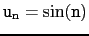

suivant: Valeurs d'une suite récurrente
monter: Valeurs de un
précédent: Valeurs de un
Table des matières
Index
Tableau de valeurs des termes d'une suite : tablefunc
table_fonction
tablefunc ou table_fonction est une commande qui s'utilise à
l'intérieur d'un tableur (que l'oon ouvre avec Alt+t) et qui .
remplit deux colonnes donnant la table des valeurs d'une fonction.
tablefunc(ex,n,n0,1), où ex est une expression
dependant de n, remplira le tableur avec
les valeurs de la suite un = ex pour
n = n0, n0 + 1, n0 + 2,.....
Exemple : Affichage des valeurs de
un = sin(n)
On ouvre un tableur avec Alt+t.
Puis, on sélectionne une case du tableur (par exemple C0) et on tape
dans la ligne de commande du tableur :
tablefunc(sin(n),n,0,1)
On obtient :
deux colonnes : n et sin(n)
- dans la colonne n il y a la valeur du pas (qui doit être égal
à 1) et la valeur de n0 (ici 0), puis une formule C2+C$1
qui a été recopiée vers le bas.
- dans la colonne sin(n) il y a "Tablefunc", puis une formule
qui a été aussi recopiée vers le bas.
Les valeurs de la suite
 s'affichent alors en face des
n correspondants à partir de n=n0 (ici 0).
suivant: Valeurs d'une suite récurrente
monter: Valeurs de un
précédent: Valeurs de un
Table des matières
Index
Documentation de giac écrite par Renée De Graeve